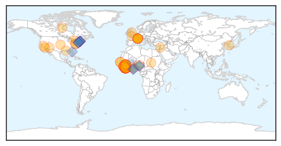
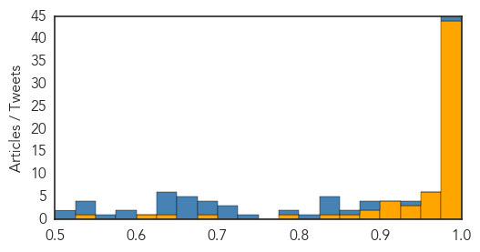

Ebola
30-Day Web Trend
0 alerts, 0 warnings

30-Day Twitter Trend
1 alerts, 0 warnings
Article Locations
Article Confidences
Top Articles:
- 1.000
- Liberia announces return of Ebola, with 1 new death, news, Health News, AsiaOne YourHealth
- 1.000
- Liberia records Ebola death despite being declared virus-free
- 1.000
- Liberia Announces the Return of the Ebola Virus
- 1.000
- New Ebola case in Texas raises worries about U.S. health system
- 1.000
- Ebola crisis: Liberian corpse tests positive for virus nearly two months after country was declared free of the disease
- 1.000
- Liberia Taking All Precautions As Ebola Reappears After 2 Months Of Silence
- 1.000
- Ebola returns to Liberia as teenager's death marks the first case for 6 weeks
- 1.000
- Corpse tests positive for Ebola in Liberia as Canada ends military mission
- 1.000
- Ebola crisis: Liberia quarantine after death
- 1.000
- Canadian troops coming home from Ebola zone
- 0.999
- Ebola Returns to Liberia Weeks After It Was Declared Free of Virus
- 0.999
- Liberia’s push towards sustained zero Ebola cases thwarted
- 0.999
- Is Ebola back? Liberia reports first case of virus after all clear in May
- 0.999
- Liberia announces return of Ebola
- 0.999
- Boy Dies of Ebola Seven Weeks after WHO Declares Country Free of Virus
- 0.999
- Liberian official says corpse tests positive for Ebola
- 0.999
- Start Of A New Outbreak?
- 0.999
- Liberia announces return of Ebola
- 0.999
- Liberia announces return of Ebola, with one new death
- 0.999
- Liberia reports a return of Ebola virus
- 0.999
- Liberian official says corpse tests positive for Ebola
- 0.999
- Liberia confirms 2nd case of Ebola amid fears of relapse
- 0.999
- Liberia Ebola Death Sparks Outbreak Fears
- 0.999
- Liberia announces return of Ebola
- 0.999
- Liberia announces return of Ebola
- 0.999
- Liberia announces return of Ebola - Authorities start tracing victim’s contacts - Kuwait Times
- 0.999
- Liberia announces return of Ebola (Update)
- 0.999
- Liberia announces return of Ebola
- 0.998
- Authorities Report New Ebola Death In Liberia After Country Declared Ebola-Free : LIFE : Tech Times
- 0.998
- New Ebola case recorded in Liberia
- 0.998
- Ebola-free no more: Virus kills young Liberian
- 0.998
- Ebola returns to virus-free Liberia
- 0.998
- iafrica.com Ebola returns to Liberia
- 0.997
- Ebola back in Liberia: One victim confirmed dead after country declares eradication
- 0.997
- New Ebola Death Has Liberia on High Alert Once Again
- 0.997
- Corpse tests positive for Ebola in Liberia, one month after country declared Ebola free
- 0.995
- Liberia records Ebola death despite being declared virus-free
- 0.994
- Ebola returns to Liberia
- 0.994
- 1 dead after Ebola reappears in Liberia
- 0.991
- Liberia announces return of Ebola, with one new death
- 0.989
- Liberia announces return of Ebola, with one new death
- 0.987
- Liberia announces return of Ebola
- 0.987
- Arizona no longer screening Liberian travelers for Ebola
- 0.986
- In brief: Liberia sees another death from Ebola
- 0.969
- Liberia announces return of Ebola
- 0.961
- Liberia announces return of Ebola
- 0.961
- Infection control & quality in the US: 2015 mid-year report
- 0.958
- Sierra Leone News: Ebola violators will be jailed -DERC Coordinator « Awoko Newspaper
- 0.955
- Ebola Returns to Liberia
- 0.952
- Ebola returns to Liberia, but health minister tells public ‘no need to panic’
Showing top 50 articles...
Top Tweets:
- 0.985
- Canadian military medical staff end Sierra Leone Ebola mission - CTV News http://t.co/apS0GYMQS9 ebola EVD
- 0.978
- Ebola returns to Liberia: Given the interconnected nature of Liberia, Sierra Leone & Guinea, there's no surprise Ebola has returned. 1/n
- 0.973
- Liberia records Ebola death despite being declared virus-free - Reuters http://t.co/Cw9nnyV3b6 ebola EVD
- 0.960
- Canadian military medical staff end six-month Ebola mission in Sierra Leone 0 - London Free Press http://t.co/I9uq8l995j ebola EVD
- 0.953
- Morning Break: Ebola Back in Liberia, SCOTUS Redux, Lavigne's Lyme Lament - MedPage Today http://t.co/fFqk5vrnFu ebola EVD
- 0.943
- Ebola Returns To Liberia With A Mysterious Case Near Monrovia - NPR http://t.co/BRO1TJIDFS ebola EVD
- 0.942
- The Ministry of Health in Liberia has reported the country's first case of Ebola since being declared free of the virus on May 9.
- 0.936
- After Ebola, Understanding Healthcare Needs Among Rural Liberians - Infection Control Today http://t.co/ejfwOzZLoU ebola EVD
- 0.932
- Health Q&A: Malaria killed more after Ebola outbreak: http://t.co/uUKK94UJZf via
- 0.911
- New Ebola case marks disease's return to Liberia - BBC News http://t.co/EeY5L8aX15 ebola EVD
- 0.883
- Ebola returns to Liberia: The man's lack of a link to a known case hints there are undetected chains of Ebola transmission. Dangerous. 6/6
- 0.879
- Liberian Official Says Corpse Tests Positive for Ebola - ABC News http://t.co/tbpoQXvKc1 ebola EVD
- 0.879
- Liberian Official Says Corpse Tests Positive for Ebola - ABC News http://t.co/rEqPNtjzeq ebola EVD
- 0.874
- Liberia quarantines area of where new Ebola case appeared - U.S. News & World Report http://t.co/3fSm2toMmk ebola EVD
- 0.861
- New Ebola Case Is Discovered in Liberia - New York Times http://t.co/8vL8sXYvWA ebola EVD
- 0.849
- RT: Latest Liberia case shows limits of "ebola-free" concept when surrounding countries still epidemic & Liberian health system f…
- 0.838
- RT: One sample tested Ebola positive in Dolo's Town, Margibi County - Dr. Dahn, Health Minister http://…
- 0.837
- Ebola Survivors May Be the Key to Treatment—For Almost Any Disease - Wired http://t.co/w5tzYJ9c3I ebola EVD
- 0.837
- Ebola Survivors May Be the Key to Treatment—For Almost Any Disease - Wired http://t.co/VdEQ5rY9pe ebola EVD
- 0.828
- Ebola returns to Liberia: While cases persist in Sierra Leone and Guinea, the risk of spread to Liberia & beyond is ever-present. 2/n
- 0.824
- RT: Liberia dep health min denies to Reuters that village quarantined after Ebola death. Concept v controversial post-West …
- 0.793
- ALERT Liberia: New Ebola Death Is Reported. Liberia was Ebola free since 9 May 2015 http://t.co/Jeio0DgH7c
- 0.749
- Liberia records Ebola death despite being declared virus-free - Reuters http://t.co/gXQhNuja9u
- 0.723
- New Ebola death in Liberia, almost two months after country declared Ebola-free http://t.co/SM2LFqt7xu
- 0.709
- “The Ebola fight is not over but we must not lose hope” Dr. Bernice Dahn, Minister of Health, Liberia http://t.co/YHCPCTaNsn
- 0.696
- Ebola returns to Liberia:It isn't known how the man contracted Ebola. If he were a contact of a known case that would be less troubling 5/n
- 0.690
- Taking action: @WHO responds to Ebola in West Africa http://t.co/lUCTPxEVxi
- 0.683
- Liberia now has the capacity to contain the new case, but remains vulnerable until we reach zero Ebola cases throughout the region.
- 0.654
- Ebola returns to Liberia: For starters, the man wasn't recognized as an Ebola case until after his death. Speaks to lowered vigilance. 4/n
- 0.654
- .@WHO have you put out a statement on the new Ebola case in Liberia? I see nothing on the WHO and AFRO sites.
- 0.653
- Ebola outbreak will not have ended until the last case has been identified and treated. EbolaResponse http://t.co/IOltrDoMBO
- 0.652
- RT: Question to be asking is why the world finds out about Ebola's return to Liberia 2 days after swab tested positive ebol…
- 0.652
- Good, quick reporting by on Liberia's 1st Ebola case since March. No known recent travel outside Liberia. https://t.co/mcq2qK1OdH
- 0.640
- RT: Good, quick reporting by on Liberia's 1st Ebola case since March. No known recent travel outside Liberia. http…
- 0.625
- International Health Regulations: Ebola preparedness IHR http://t.co/wmf5KoRLaX
- 0.614
- Endurance of Ebola worries Liberians as disease spreads near its borders http://t.co/tiGujvwHHA
- 0.594
- New Ebola case reported in Liberia, Newsday - BBC World Service... http://t.co/otxbgJCCLl
- 0.589
- 29 June - news pouch on avianflu avianinfluenza Ebola EbolaResponse MERS is here: http://t.co/nug6mBuXo9
- 0.579
- Safety & surveillance being stepped up in Liberia. EbolaResponse workers as determined as ever to reach zero Ebola cases in the region.
- 0.577
- 30 June - news pouch on avianflu avianinfluenza Ebola EbolaResponse MERS is here: http://t.co/YdiX0kLkKM
- 0.576
- .@UNICEF reports a surge of efforts in Sierra Leone's last remaining Ebola hotspots. Story here: http://t.co/kF416Ycq9G
- 0.562
- RT: Nice animation about how Ebola virus is caught and spread - YouTube | http://t.co/yB3dHNS25T
- 0.559
- RT: Ebola was gone. It's back in Liberia (Margibi county) far from the Sierra Leone, Guinea borders. Map via http://…
- 0.546
- I agree, @kakape. No clear answer would be a very bad answer. @FluTrackers Ebola Liberia
- 0.544
- Ebola returns to Liberia: However, there are troubling signs in the initial information being released about the Liberian case. 3/n
- 0.521
- Report from Guinea says tens of thousands of malaria cases are going untreated because of Ebola fears. http://t.co/OYmsyUEVsv via
- 0.509
- RT: The Liberian Ministry of Health's press released on their first Ebola case since March is ... underwhelming. http://t.…
Unknown
30-Day Web Trend
15 alerts, 4 warnings

30-Day Twitter Trend
11 alerts, 0 warnings

Article Locations

Article Confidences
Top Articles:
- 0.999
- Patient free of MERS virus but will remain quarantined in Thailand - Regional
- 0.997
- South Korea reports one MERS death, no new cases
- 0.996
- Thailand's First MERS Case Declared Free of Deadly Virus
- 0.993
- S. Korea cautiously reports no new MERS cases or deaths
- 0.992
- MERS victims’ families suffer from depression
- 0.992
- Third day with no new Mers cases in South Korea, Government & Economy
- 0.991
- Third day with no new MERS cases in S. Korea – BorneoPost Online
- 0.987
- MERS outbreak: South Korea goes third day with no new cases
- 0.967
- Tularemia cases on the rise, rabbit with infection dies in El Pa - KOAA.com
- 0.967
- Dog, rabbit infected with tularemia in El Paso County
- 0.955
- CHP investigates first case of Japanese encephalitis in 2015
- 0.953
- Cedar Rapids, Iowa News, Sports, and Weather
- 0.947
- 2 Promising Treatments Identified By Researchers
- 0.917
- Chicago Tribune
- 0.917
- Chicago Tribune
- 0.917
- Chicago Tribune
- 0.917
- Chicago Tribune
- 0.917
- Chicago Tribune
- 0.917
- Chicago Tribune
- 0.917
- Chicago Tribune
- 0.917
- Chicago Tribune
- 0.917
- Chicago Tribune
- 0.917
- Chicago Tribune
- 0.917
- Chicago Tribune
- 0.917
- Chicago Tribune
- 0.917
- Chicago Tribune
- 0.917
- Chicago Tribune
- 0.917
- Chicago Tribune
- 0.917
- Chicago Tribune
- 0.917
- Chicago Tribune
- 0.917
- Chicago Tribune
- 0.917
- Chicago Tribune
- 0.917
- Chicago Tribune
- 0.917
- Chicago Tribune
- 0.917
- Chicago Tribune
- 0.917
- Chicago Tribune
- 0.913
- Two rabid bats found in Weber County
- 0.910
- The world windows to Thailand
- 0.883
- Ciguatera Fish Poisoning In Florida Underreported
- 0.882
- Utah health officials warning residents after rabid bat found
- 0.864
- 1000 people likely sickened by fecal matter in French mud run
- 0.823
- Quarantine for 20 Mers-risk people in Thailand ends
- 0.822
- KUNA : Kuwait bans live bird imports from Ghana
- 0.799
- SR airport's only thermal scanner ‘broken’, National, Phnom Penh Post
- 0.780
- University of Oklahoma professor finds key mosquito protein for development of new malaria vaccine
- 0.772
- Florida bacteria alert: Beware of warm saltwater if you have open cuts
- 0.737
- Kuwait bans live bird imports from Ghana - Kuwait Times
- 0.732
- Salmonella from frozen chicken hits 44 in Canada
- 0.731
- More people in Florida sickened by toxin in tropical reef fish than previously reported
- 0.728
- UNCOVERING LYME DISEASE: THE HUNTER LINK
Showing top 50 articles...
Top Tweets:
- 0.660
- Cuba es el primer país en el mundo en recibir la validación de OMS por haber eliminado la transmisión madre a hijo del VIH y sífilis
- 0.604
- .@OPSOMS ha trabajado en Cuba y otros países de las Américas para eliminar la transmisión vertical de VIH y sífilis congénita